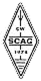

SCAG: Scandianvian CW Activity Group (Skandinaviska telegrafiaktivitetsgruppen)
Motto: To support and Encourage Amateur Radio CW Att stödja och uppmuntra amatörradiotelegrafi
Tillåter icke-skandinaver som medlemmar men det mesta av den tryckta
bulletinen "SCAG-NL" är skriven på danska eller svenska
(men en engelsk sammanfattning finns med).